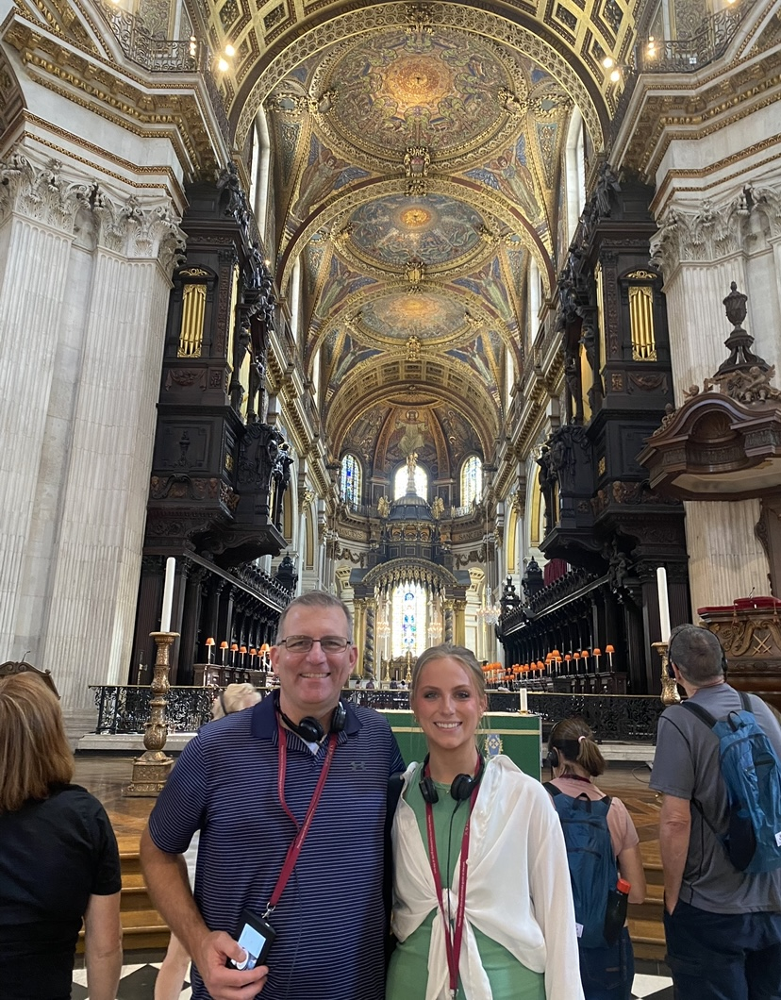
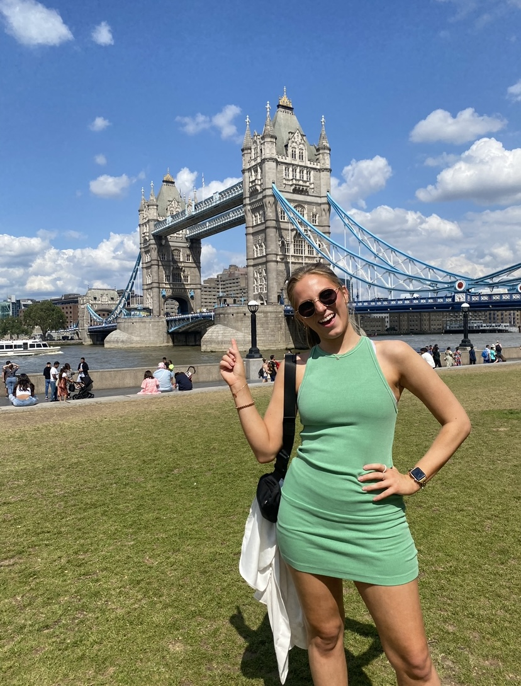
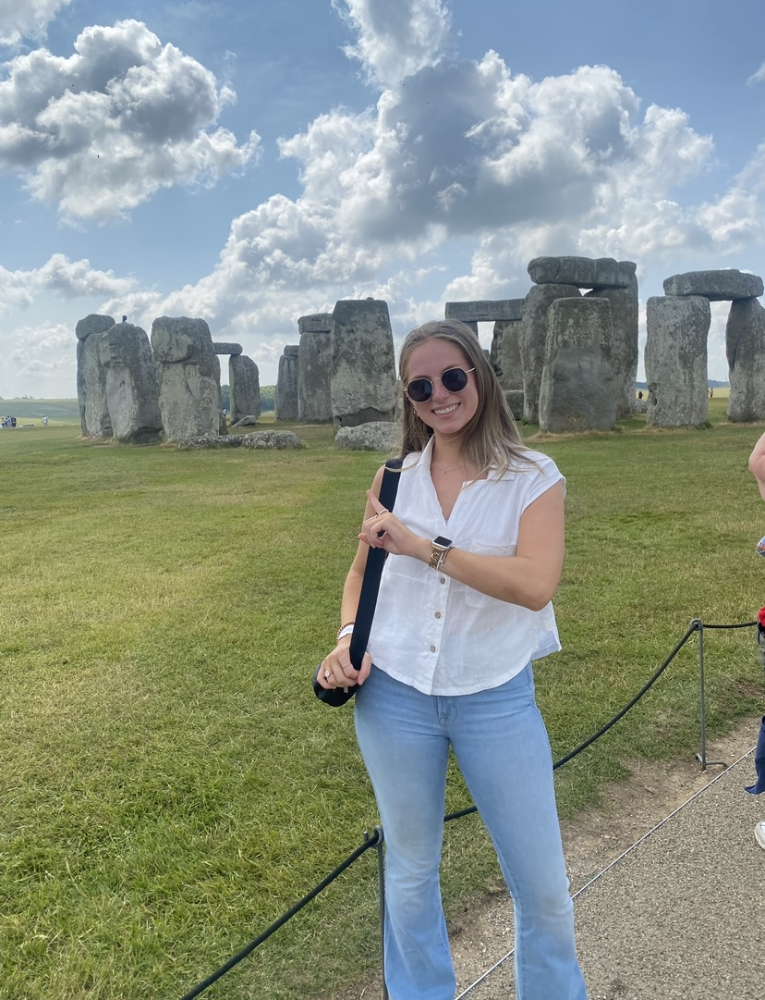
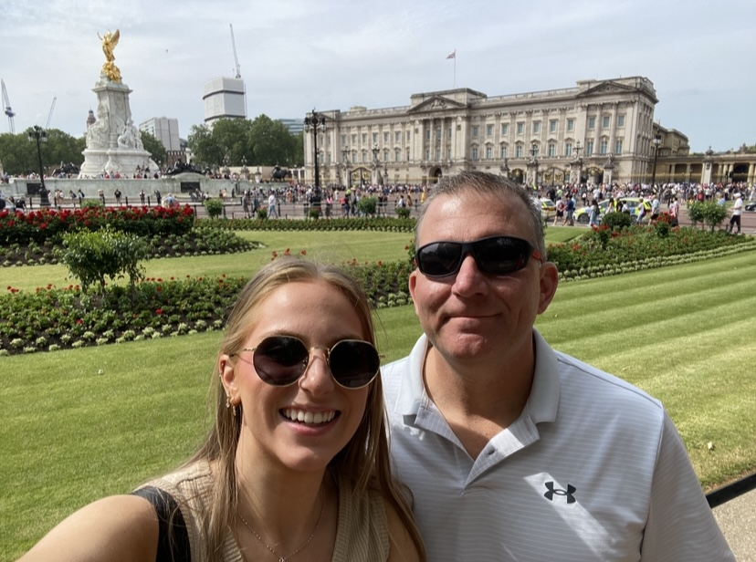
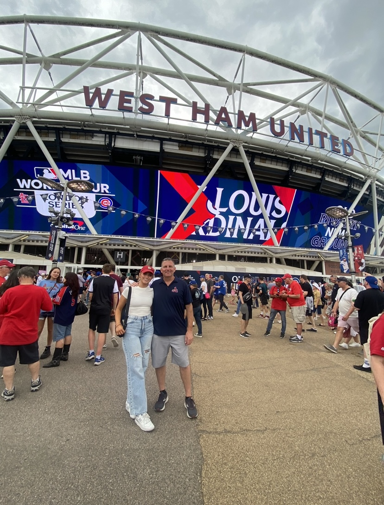
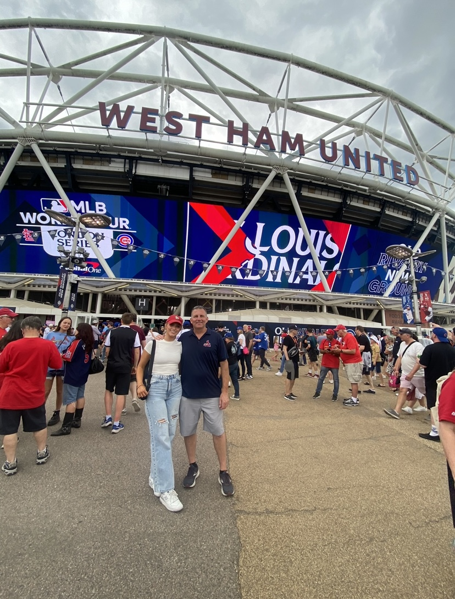

London adventure
This is a collection of photos from July 2023 when I went to London with my dad. We traveled to London to see the St. Louis Cardinals play against the Chicago Cubs as part of the MLB World Tour, but we also spent a week visiting several popular monuments.

This is me and my dad in St. Paul’s Cathedral. This was our first stop, on the first day of our adventure around the city.

Stop number 2! This is a photo of me pointing at Tower Bridge, as any normal American tourist would. I learned the hard way that this is NOT the same thing as London Bridge.

The next day, we took a bus tour that traveled to Salisbury Plain where we saw Stonehenge. Here, you can see yet another photo of me pointing at what is obviously behind me.

Day number 3! My dad and I made it to Buckingham Palace in time to see the changing of the guard, an almost daily but famous ceremony.
 On Day 4, I took this photo of my dad standing in front of the Thames River, and of course, Big Ben and the beautiful Westminster Abbey.

Finally game day! As our trip came to a close, our final destination for the trip was West Ham Stadium. This was the location of the Cardinals vs Cubs baseball game, where we won (in spirit).
On Day 4, I took this photo of my dad standing in front of the Thames River, and of course, Big Ben and the beautiful Westminster Abbey.

Finally game day! As our trip came to a close, our final destination for the trip was West Ham Stadium. This was the location of the Cardinals vs Cubs baseball game, where we won (in spirit).